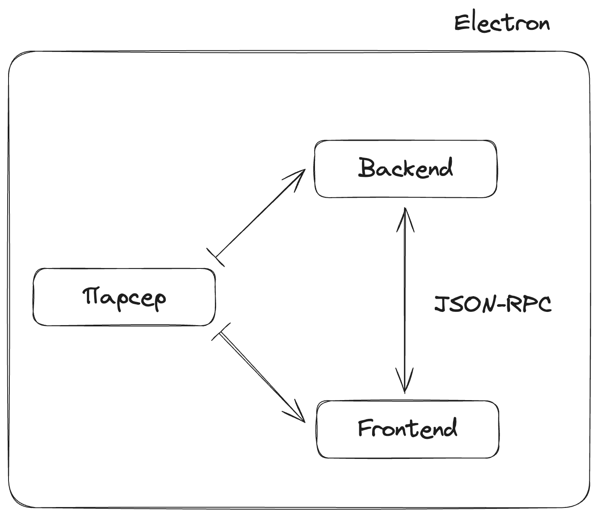

Как (не) написать фронтенд на Rust
О себе

Кто мы и что делаем
Как можно написать фронтенд на Rust?
Как можно не написать фронтенд на Rust?
Конец?


Функциональный

Polyglot

- Гибкость и кастомизируемость UI
- Производительность
- Кроссплатформенность
Кто мы и что делаем
Как можно написать фронтенд на Rust?
Как можно не написать фронтенд на Rust?
Конец?
- Стандарт виртуальной машины и байт-кода к ней
- Работает во всех современных браузерах
- Быстрый
- Безопасный
- Нет прямого доступа к ОС и DOM

// Get the element with id "myElement"
let element = document.getElementById("myElement");
// Change the text content of the element
element.textContent = "Hello, World!";
// Change the background color of the element
element.style.backgroundColor = "blue";
function draw() {
const canvas = document.getElementById("canvas");
if (canvas.getContext) {
const ctx = canvas.getContext("2d");
ctx.beginPath();
ctx.arc(75, 75, 50, 0, Math.PI * 2, true); // Outer circle
ctx.moveTo(110, 75);
ctx.arc(75, 75, 35, 0, Math.PI, false); // Mouth (clockwise)
ctx.moveTo(65, 65);
ctx.arc(60, 65, 5, 0, Math.PI * 2, true); // Left eye
ctx.moveTo(95, 65);
ctx.arc(90, 65, 5, 0, Math.PI * 2, true); // Right eye
ctx.stroke();
}
}

WebGL
- Огрызок OpenGL ES
- Порядком устарел
- Шейдеры
Архитектура
- Scala → Rust
- 100 Мб → 4 Мб
- fn parse(string: &str) -> Result<Ast>
- JNI-обертка для использования в бекенде
SDF (Signed Distance Function)
\[ f(x) = \begin{cases} d(x, \partial \Omega) & \text{if }\, x \in \Omega \\ -d(x, \partial \Omega) & \text{if }\, x \in \Omega^c \end{cases} \]Кто мы и что делаем
Как можно написать фронтенд на Rust?
Как можно не написать фронтенд на Rust?
Конец?
- 20–30 секунд на каждую пересборку
- Демо-сцены
- ./run gui watch --crate-path=app/gui/demo/icons
- Учишься воспроизводить
- Изучаешь исходники и думаешь
- Если не придумал, добавляешь везде console::log
- …
- PROFIT
- Прекомпиляция шейдеров
- Инструментарий для профилирования
- Меньше слоёв → меньше draw calls
- Кэширование SDF-фигур в текстуру
- Magic Rectangle
- Оптимизации HTML
- Разработка новых фичей и исправление багов занимает слишком много времени
- Мы утопаем в низкоуровневых багах
- Мы вынуждены реализовывать многие вещи с нуля
Кто мы и что делаем
Как можно написать фронтенд на Rust?
Как можно не написать фронтенд на Rust?
Конец?
Текущий статус

Выводы
- У каждого инструмента есть сильные и слабые стороны
- Трезво оценивайте свои возможности
Спасибо за внимание
Слайды: vitvakatu/rustcon2023
Мой Telegram: @vitvakatu
Наш сайт: Enso.org
Наш GitHub: enso-org/enso